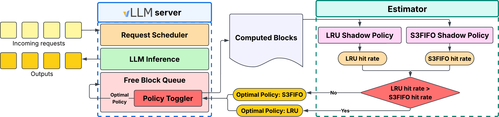

目录 · 8 节
1它到底在解决什么问题？2整体思路：块是只写一次的，去处在写入时就能定3FC-GVA：块生成时就决定放哪4FC-MAS 和 FC-CIO：让 SSD 读得快，又不拖慢内存命中5实测：它真的更好吗？6我认为它的局限7一个推理服务团队可以怎么试8结论作者分析了八份大模型线上请求记录，发现通行的把内存当成 SSD 前面一层 KV cache 缓存的做法，在这些负载下几乎挡不住读请求。复用的块要么隔很久才再用，要么属于一个就有好几 GB 的 agent 会话，内存装不下，SSD 必然在读路径上。FlatCake 让内存和 SSD 平级，块一生成就定好去处。共享的系统提示和短回复的对话放内存，几 GB 的 agent 会话直接写 SSD。同一会话的块连续存放、不再搬动，读时从 SSD 大块直接读进 GPU。回放一份 Claude Code 线上请求记录，负载升高时，它读回、不用重算的前缀比例保持在 94%，Mooncake 降到 64%。长会话 agent 的 KV 存储应该按会话整体来规划。
它到底在解决什么问题？
prefix caching 已经是推理服务的标配。显存放不下这么多 KV，于是 Mooncake、LMCache、SGLang HiCache 都把它往外放，按分层缓存的老办法组织：新块先进内存，内存满了按 LRU 把冷块挤到 SSD，SSD 上的块要用时再经内存搬回 GPU。
这套做法靠两个前提。一是内存能留住常用的块，SSD 只处理偶尔的冷读。二是 SSD 上的块虽然被淘汰顺序打散了，经过内存中转就能拼回来。作者认为这两个前提在大模型负载下同时不成立。看一个示意场景：一台机器同时服务 20 个写代码的 agent 会话，每个会话的历史 KV 有几 GB。
| 一次读取（示意） | 分层存储的做法 | 结果 |
|---|---|---|
| 会话 A 第 30 轮，要读回前 29 轮的 KV | 前 29 轮的块早被其他会话挤出内存，散落在 SSD 各处 | 发上千个小读请求，先读进内存缓冲再搬到 GPU |
| 同时 10 个会话都在读回 | 每个都要在内存里占一块中转缓冲 | 缓冲不够，部分预取被取消，只能重算 prefill |
真实数据更说明问题。普通对话和 API 类的七份记录里，53% 到 94% 的块只被访问一次，可复用的前缀之间要隔几百到几千个请求，所以只访问一次的块会不断把有用的前缀挤出内存。Claude Code 那份记录正相反，83.4% 的块会被复用，但一个请求平均涉及约 21.9 万个 token 的历史，单个 GPU 上就要约 0.8 GiB，多个会话一叠就超过内存。两种情况殊途同归：大部分命中只能由 SSD 提供。
整体思路：块是只写一次的，去处在写入时就能定
作者的关键观察是，KV 块和普通内存页不一样：写进去之后不会再改，而且总是按会话整体被复用。下一轮对话一定把这个会话之前所有层的 KV 一起读回。既然块不会被修改，就没有脏数据要写回；既然知道它属于哪个会话、会被怎么读，那么在 SSD 上怎么摆放才好读，写入时就已经知道了。

FlatCake 由三个部件组成，各管请求生命周期的一段：
| 部件 | 管哪一段 | 做什么 |
|---|---|---|
| FC-GVA | 写入和寻址 | 块生成时决定放内存还是 SSD，把位置写进一个不会变的 64 位地址 |
| FC-MAS | 调度 | 把块全在内存的请求和需要读 SSD 的请求分开排队 |
| FC-CIO | SSD 读写 | 按会话、按层连续写；读时合并成大块，直接读进 GPU |
下面拆开讲。
FC-GVA：块生成时就决定放哪
分层存储不用在写入时决定块的长期去处，一律先进内存，交给 LRU。FlatCake 去掉了迁移，就得在写入时一次定好。作者用的是写入时引擎已经知道的信号：被多个请求共用的系统提示（同一段提示的 KV 只存一份，引擎前缀树里该前缀的引用计数，也就是当前引用它的请求数，大于 1 就算共用）和上一轮回复较短的多轮对话，体积小、很快会再用，放内存；多短算短、多长算长，各由一个可调阈值决定；上下文已超过 agent 阈值或上一轮回复较长的会话、会话的第一轮请求，以及内存已满时的写入，直接写 SSD。轮次、已有上下文长度和上一轮回复长度，在这一轮开始生成前就都知道了。
为什么敢把可能复用的块直接放 SSD？因为在这套设计里放错的代价不对称。SSD 上的会话是连续存放的，读回时只是走 SSD 带宽而不是内存带宽，不会造成缓存缺失，也不会引发块在两层之间来回搬。
因为块的位置不会变，所以可以直接编进地址。每个块对应一个 64 位地址：最高 4 位表示介质（0 是内存，1 是 SSD），接着 12 位是节点号，最后 48 位是字节偏移。查块时，内存里的一张哈希表用块的键一次查到地址，再看介质位就知道该用哪条通路：本地内存用 cudaMemcpyAsync，本地 SSD 用 GPUDirect Storage（GDS），远端分别用 RDMA 和 NVMe-oF。
回收 SSD 空间也按会话整体来。块不会被改，回收不用写回；SSD 使用率超过高水位时，回收最老的、当前没人在读的整个会话。对比 Mooncake 按固定大小的桶分配 SSD、按先进先出回收：一个桶里混着好几个会话的块，回收一个桶就可能把几个活跃会话的前缀各切掉一截，下次只能重算。
FC-MAS 和 FC-CIO：让 SSD 读得快，又不拖慢内存命中
去掉内存中转后，内存和 SSD 的带宽差距（论文测的约 5 倍）直接暴露给调度器。如果所有请求排一个先来先服务的队，一个要从 SSD 读几 GB 的请求会挡住后面只需搬一点内存数据的请求。FC-MAS 开两个队：块全在内存的请求进就绪队列，立刻执行；只要有一个块在 SSD，就进 SSD 准备队列，后台把它要用的历史 KV 全部预取进显存，读完才进就绪队列开始 prefill。
SSD 队列内部的顺序按这个优先级排：
等待时间除以要读的 KV 大小。示意：一个 1 GB 的请求和一个 4 GB 的请求都等了 2 秒，优先级分别是 3 和 1.5，小的先读；可大请求的优先级随等待时间一直涨，不会被饿死。预取完的请求插回就绪队列时，按它最初到达的时间排位，而不是排到队尾，因为它在 SSD 队列里等的时间也算数。 Hoot 说

这篇论文的贡献是让 KV 直接从 SSD 读进显存，不经过内存中转。SSD 队列的优先级是 1 + 等待时间 ÷ 要读的 KV 大小。示意：大请求等到 10 秒时是 1 + 10/4 = 3.5，一个只等了 2 秒的新 1 GB 小请求是 3，大请求先读。拖动滑块比较两条线。
出处
示意例子，对应论文 §4 FC-MAS 优先级公式FC-CIO 负责把 SSD 读快。prefill 是一层一层算的，第 l 层要用到这个会话全部历史 token 在第 l 层的 KV。于是写入时，每个会话占一个预先分配好的连续文件，每轮写入的块按层排好，这一轮里第 l 层的所有块占一段连续区间，后续轮次再往后追加一组按层排好的段。所以恢复第 l 层的历史时，要读的是每轮各一段的几段大块连续数据，而不是散落各处的成千上万个小块。读的时候，把要读的块按（文件，偏移）排序，相邻的合并成一个大读请求，中间小于 64 KiB 的空隙也一起读进来，用少量多余字节换更少的读命令。论文给出的理想情况是，读命令数因此从“层数乘块数”降到“层数”量级；这对应一个会话的历史在一批里写完、每层恰好一段的情况。多轮追加后每层是每轮一段，读命令数大约是层数乘轮数，仍远少于块数。
读出来的数据不经过内存，用 GDS 直接读进 GPU 上一个很小的双缓冲窗口，每路只有两层大小，再分散到分页的 KV 槽里。两个层缓冲轮流复用，所以显存里的中转空间始终只有两层大小。窗口满了，新的预取就等一等，而不是像分层存储那样因中转缓冲不足取消预取、改成重算。
实测：它真的更好吗？
主实验在 8 张 B200 上跑 DeepSeek-V4-Flash，回放 Claude Code 线上记录，每秒请求数从 0.1 逐步加到 1.0，看负载升高时谁先撑不住。为了公平，所有系统用同样大小的内存和 SSD 预算。对比对象是只用显存加内存两层的 SGLang HiCache，以及显存、内存、SSD 三层的 Mooncake。下表的“送到 GPU 的命中率”按块统计，只算 prefill 开始前真正搬进显存的复用块，存着但没来得及读回的不算；开头说的“读回、不用重算的前缀比例”就是这个指标。
| 每秒 1.0 个请求时 | 只用内存的两层 | Mooncake | FlatCake |
|---|---|---|---|
| 平均首 token 时间 | 17.51 s | 12.24 s | 7.57 s |
| 首 token 时间中位数 | 18.39 s | 11.45 s | 6.26 s |
| 总吞吐（token/s） | 43.2K | 61.6K | 98.3K |
| 送到 GPU 的命中率 | 53.30% | 64.26% | 94.16% |
最关键的是命中率这一行。这份记录理论上最多 94.72% 的前缀可复用，FlatCake 在各档负载都差不到 0.6 个百分点；Mooncake 低负载时还有 87.9%，到每秒 0.5 个请求以上就掉到 64.26%，比只用内存只多 11 个点，等于 4 TiB 的 SSD 大部分没用上。作者把原因归到内存中转缓冲被并发的长会话读回占满，预取被取消、只能重算。这说明首 token 时间和吞吐的差距，主要来自“明明存了却没读回来”。

再拆开看各部件的作用。FC-CIO 让每个 worker 的 SSD 读带宽达到约 5 GB/s，是 Mooncake 的 1.9 倍；负载涨 10 倍，FlatCake 的 SSD 预取时间稳在 1.47 到 1.75 秒，Mooncake 从 3.16 秒涨到 9.50 秒，说明合并后的大块读在高并发下也不会排长队。Mooncake 的 SSD 读放大是 FlatCake 的 6.5 到 6.7 倍，因为打散的块、往内存的回填和被取消的预取都在消耗读带宽，却没有变成完成的读回。去掉双队列、改成单队列的消融里，平均首 token 时间慢 10% 到 11%，P99 慢 27%，说明双队列主要救的是被大请求挡住的尾部请求。
最能说明“布局”本身有用的是 Llama-3.1-70B 上的对照。Mooncake-GDS 把 Mooncake 的 SSD 读改成 GDS 直读，但仍按淘汰顺序摆放块。比平均首 token 时间：16K 上下文时它和 FlatCake 打平（2.31 s 对 2.32 s），到 64K 时慢到 6.60 s，是 FlatCake 3.74 s 的 1.8 倍。所以光换成 GDS 不够，块在 SSD 上怎么摆才是长上下文的关键。
我认为它的局限
第一，写入时的分类靠两个阈值：多短的回复算短对话、多长的上下文算 agent 会话。放错到 SSD 只是慢一点，这一点只在设计上论证过；端到端实验回放的是一份以长会话为主的记录，大量短对话被放到 SSD 时首 token 时间会怎样，这份数据回答不了。
第二，主实验只有一份 agent 记录。前面分析了八份记录，可端到端对比只回放了 Claude Code 这一份，普通对话类负载（53% 到 94% 的块只用一次）下 FlatCake 相对分层存储能赢多少，没有直接数据。
第三，对比对象偏少，且都在单机。没有和 LMCache 或其他直读 SSD 的方案在同一份记录上比，节点间的远端内存和远端 SSD 通路虽然设计了，但实验全是单机 8 卡。
一个推理服务团队可以怎么试
- 先统计自己的 KV 复用：只访问一次的块占多少、复用间隔多长、单会话 KV 有多大。如果单会话只有几十 MB、复用间隔很短，分层存储大概够用。
- 在现有分层存储上加两个监控：送到 GPU 的命中率随负载的变化，以及预取被取消、改成重算的次数。如果高负载下命中率明显掉，问题多半在中转缓冲。
- 最便宜的改动是把 agent 会话按会话连续写到 SSD、按层排列，再用 GDS 合并读，先看 SSD 读带宽和预取时间是否改善。
- 再加双队列调度，重点看 P99 首 token 时间；写入时分类的阈值用自己的流量回放来定。
结论
一句话：agent 长会话让 KV cache 的大部分命中只能来自 SSD，这时内存中转和按淘汰顺序摆放反而成了瓶颈，按会话整体规划去处和布局更合适。
| 维度 | 评价 |
|---|---|
| 问题重要性 | 高。agent 流量越来越多，单请求平均约 21.9 万 token 的历史是常态，分层存储在高负载下命中率从 87.9% 掉到 64.3% |
| 方法创新性 | 中高。部件单独看都不新，但“写入时定去处、按会话按层连续写”这个组合抓住了 KV 只写一次的特点 |
| 实验证据 | 中。线上记录回放、消融和长上下文对照都有，但端到端只有一份 agent 记录、只在单机 |
| 工程成本 | 中高。约 8.8K 行 C++/CUDA 加 7.1K 行 Python，要有 GDS 和预分配的 NVMe 文件池 |
| 是否值得尝试 | 有 agent 长会话流量、已经在用 SSD 存 KV 的团队值得，先从按会话连续写和合并读开始 |
读完这篇，你觉得
夜读鸮记下了，谢谢你的反馈。
点一下即可，无需登录；再点一次撤回。只统计匿名次数，不记录你是谁。
相关论文RELATED
 Infra · 2026-10-26KVStream: Adaptive Parallel Storage Management for KV Caching in Large-Scale LLM Serving长上下文推理会反复用到同一段前缀，比如系统提示、整份文档、代码仓库和多轮会话历史。这些前缀的 KV cache 早已放不进 GPU 显存和主机内存，只能落到硬盘上，下次命中再读回来，读盘就卡在了每一步推理的关键路径上。现有系统只读节点本地的 NVMe，集群早已挂载的并行文件系统却几乎闲着。这篇论文做了 KVStream：每块 KV 在本地盘和共享存储各写一份，读的时候两边同时读，谁先读完谁接着领下一批。接进 LMCache 实测，离线吞吐最高是 LMCache 的 1.49 倍，突发流量下平均 TTFT 最多快 6.1 倍。
Infra · 2026-10-26KVStream: Adaptive Parallel Storage Management for KV Caching in Large-Scale LLM Serving长上下文推理会反复用到同一段前缀，比如系统提示、整份文档、代码仓库和多轮会话历史。这些前缀的 KV cache 早已放不进 GPU 显存和主机内存，只能落到硬盘上，下次命中再读回来，读盘就卡在了每一步推理的关键路径上。现有系统只读节点本地的 NVMe，集群早已挂载的并行文件系统却几乎闲着。这篇论文做了 KVStream：每块 KV 在本地盘和共享存储各写一份，读的时候两边同时读，谁先读完谁接着领下一批。接进 LMCache 实测，离线吞吐最高是 LMCache 的 1.49 倍，突发流量下平均 TTFT 最多快 6.1 倍。
Infra · 2026-10-29WAKMan: Workload Aware KVCache ManagervLLM 的前缀缓存该用哪种淘汰策略，取决于此刻的流量。agent 请求几秒后就带着同样的历史回来，默认的 LRU 正合适；热门系统提示和多轮对话的历史隔很久才回来，要靠优先保护反复被用的块的 S3FIFO 才留得住。作者在 20 种请求混合上实测，两种策略各有输赢。WAKMan 每 15 分钟把刚过去的流量在两套模拟缓存上各重放一遍，下一段时间用命中率更高的那套，平均比只用 LRU 多 5 个点的命中率。 Infra · 2026-10-28Cross-Modal Data Co-Locality for Heterogeneous Storage Systems一条多模态查询要先查文本向量、再取对应的图片向量，两次近邻检索都很快，慢的是两份向量分在不同存储层时的那次搬运。CoLoc 不改向量也不改索引，只调整数据放在哪一层：经常被同一条查询一起用到的向量尽量放在同一层。它优化的是数据放在哪，而不是在哪里搜。在四层存储测试中，需要跨层取数的查询从 73.04% 降到 0，多模态查询占一半时端到端延迟降低 24.8%，召回率不变。
Infra · 2026-10-28Cross-Modal Data Co-Locality for Heterogeneous Storage Systems一条多模态查询要先查文本向量、再取对应的图片向量，两次近邻检索都很快，慢的是两份向量分在不同存储层时的那次搬运。CoLoc 不改向量也不改索引，只调整数据放在哪一层：经常被同一条查询一起用到的向量尽量放在同一层。它优化的是数据放在哪，而不是在哪里搜。在四层存储测试中，需要跨层取数的查询从 73.04% 降到 0，多模态查询占一半时端到端延迟降低 24.8%，召回率不变。 Infra · 2026-10-25uGDS: A User-Space Development Kit for High-Performance GPU Direct Storage用 NVIDIA 的 GDS 把数据从 SSD 直接读进 GPU 显存时，作者实测发现，异步读取 99.6% 的时间都卡在提交请求这一步。大模型推理服务会把算过的 KV cache 存到 SSD 上，下次遇到同样开头的请求就直接读回来，不用重算，这一步的速度直接影响首字延迟。uGDS 把指挥 SSD 干活这件事从操作系统内核搬到普通程序里来做。数据照样从 SSD 直达 GPU，变的是谁来下命令。uGDS 批量读的速度最高是 GDS 的 12 倍；接进开源缓存系统后，长提示的首字延迟中位数从 1.9 秒降到 0.7 秒。
Infra · 2026-10-25uGDS: A User-Space Development Kit for High-Performance GPU Direct Storage用 NVIDIA 的 GDS 把数据从 SSD 直接读进 GPU 显存时，作者实测发现，异步读取 99.6% 的时间都卡在提交请求这一步。大模型推理服务会把算过的 KV cache 存到 SSD 上，下次遇到同样开头的请求就直接读回来，不用重算，这一步的速度直接影响首字延迟。uGDS 把指挥 SSD 干活这件事从操作系统内核搬到普通程序里来做。数据照样从 SSD 直达 GPU，变的是谁来下命令。uGDS 批量读的速度最高是 GDS 的 12 倍；接进开源缓存系统后，长提示的首字延迟中位数从 1.9 秒降到 0.7 秒。
讨论
欢迎补充实验细节、复现经验或不同看法。需 GitHub 登录。
正在加载讨论…